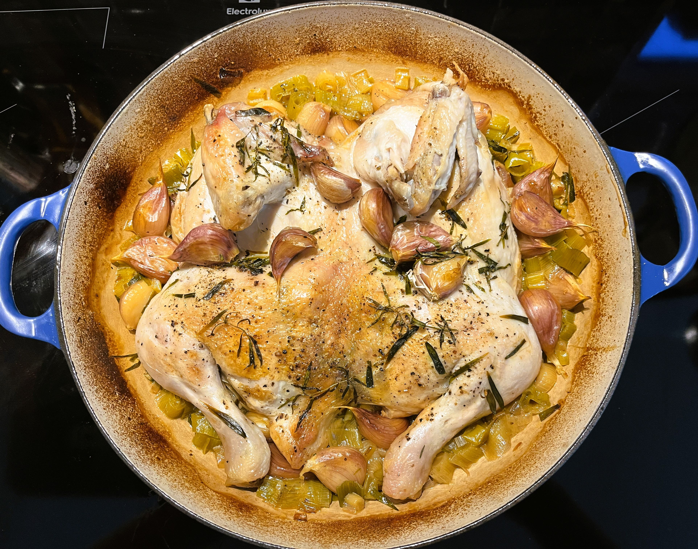
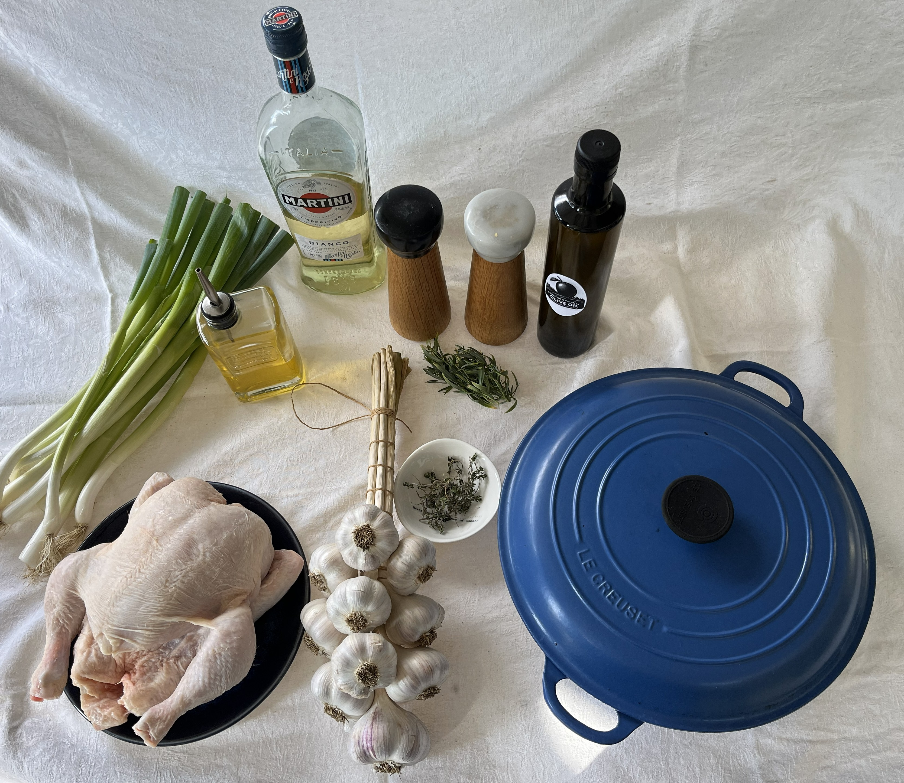

Garlic based recipes we recommend



Chicken
A version of the classic French dish where a whole chicken is slow - cooked in a covered casserole dish with unpeeled garlic cloves. The cooking process transforms the garlic, which becomes mellow and sweet, and pops out of its skin. The smell while cooking is divine, and the flavour is deeply aromatic with the juice just begging for some crusty bread.
The prep is quick at around 20 minutes. We serve the chicken with scalloped potatoes and a simple green salad
Ingredients
- 2 tablespoons olive oil
- Whole chicken, preferably organic
- 1 bunch or 6 spring onions finely sliced
- 8 to 10 sprigs fresh thyme, or French tarragon if available
- 40 cloves garlic (approximately 3 to 4 heads), unpeeled
- 2 tablespoons dry white vermouth or white wine
- 1 teaspoon sea salt
- Good grinding pepper
Method
- Preheat the oven to 350 degrees F.
- Heat the oil on the stovetop in a wide, shallow ovenproof and flameproof Dutch oven (that will sn ugly fit the chicken in one layer once butterflied, and that has a lid), and sear the chicken over a high heat, skin-side down for approximately 5minutes. Flip and brown other side of chicken, then remove and place to the side
- Add the sliced spring onions to the Dutch oven and quickly stir-fry with the leaves from a few sprigs of thyme or tarragon
- Put 20 of the unpeeled cloves of garlic (papery excess removed) into the pan with the spring onions, top with the chicken skin-side up, then cover with the remaining 20 cloves of garlic. Add the vermouth (or white wine) and any juices from where the chicken was sitting. Sprinkle with the salt, grind over the pepper, and add the other sprigs of thyme or tarragon.
- Put on the lid and cook in the oven for 1 ½ to 2 hours. Cooking time will depend on the size of the chicken
Notes
Chicken thighs can be used instead of a whole chicken, with the cooking time reduced to 1 ½ hrs (check at 1 ¼ hrs).
Chicken can be browned and casserole assembled 1 day ahead. Cover tightly and store in the refrigerator. Season with salt and pepper and warm the pan gently on the stovetop for 5 minutes before baking as directed in recipe.
Source: Recipe adapted from Nigella Kitchen by Nigella Lawson. Copyright 2010 Nigella Lawson. Published by Hyperion. All Rights Reserved.

Name of recipe
Short description of the recipe goes here. This stays visible.
Ingredients
- Ingredient 1
- Ingredient 2
Method
- Step 1
- Step 2
Source: Website / Book name